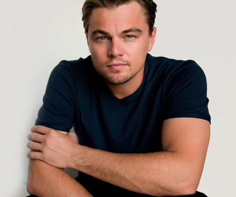

- Personajes planos: que se diferenia de los personajes estáticos, no tienen un peso importante en la trama, pero si son importantes para el resto de los personajes, puede tener caracteristicas importantes para el desarrollo de la trama, participan en la trama como pretesto para desarrollar otros personajes. nomalment en las series hay un protagonista dinámico y tiene un secundario plano.

3. Personajes Protagónicos
tiene unas competencias o características exclusivas, que sólo le pertenecen a él, por eso algunas veces está mal dicho que un personaje es un personaje robe protagonismo es porque nosotros como espectadores (Harry Potter - Dumbledore ); puede occurrir que haya protagonistas corales (friends) pero siempre habrá alguna metratrama donde hay alguien que sobre sale (Rachel y Ross). Un protagonista no tiene que seguir siempre el camino del héroe, por lo tanto hay protagonistas que son villanos (Catarsis: cuando nos gusta un villano).
CARACTERÍSTICAS
- Una de las características que caracteriza al villano es que focaliza al villano (minutos en pantalla)
- Organiza la historia, toda historia tiene un eje, se mueve donde se mueve el eje
- Es el que más información nos proporciona
- Es autónomo, que puede hacer lo que quiera
- Acciones exclusivas, hacen cosas que no pueden hacer otros personajes
- Tiene situaciones con las que empatizas
4. PERSONAJE ARQUETIPO/chiché
Estos personajes tiene unas dimensiones (físicas, social, pscicológicos) prefijadas
5. PERSONAJE OBJETO
El personaje objeto es aquello que busca el protagonista: una cosa, un animal pero tiene que ser importante en la trama,
6. EL ANTAGONISTA
Representa un oponente que compite o lucha contra el protagonista, pueden compartir o no el mismo objetivo, se le puede interponer al villano o puede querer lo mismo que quiere el héroe, lo tendemos a humanizar pero puede ser un vuris o un objeto, un grupo, un animal, un monstruo, un objeto maldito, un problema psicológico. Una antagonista puede ser una madre y una hija.
7. PERSONAJES SECUNDARIOS/TERCIARIOS/COMPLICES
tiene un papel de cierta relevacia en la historia, que existen por necesidades de la acción de la historia, para complementar al protagonista, no pueden ser muy definidos porque van a robar protagonismo, y siempre que se crea uno se debe preguntar, cuál va a ser su función principal, "qué va a hacer? a quién va a uyudar y porqué? es necesario?" el secundario tiene que estar la mitad del protagonista, es decir 40%,

Extras/Personajes Ambiente
Son todos aquellos personajes que reciven las personas que no tienen la categoría de actor, y son aquellos personajes que aparecen de fondo y no tienen diálogo, desde el punto de vista de la producción y la realización son un conjunto vital, pues sin ellos, no puedes dar vida al mundo imaginario que has creado, van a ayudar a los protagonistas o secundarios,
- Figuración normal
- Figuración fija/personajes masa
- Bit de acción
- Bit
- Personajes de interés romántico
- Personaje confidente
- Personaje catalizador
- Personaje contraste*(intentar hacer algo así)
- Personaje Obstáculo
- Personaje mentor/sabio
- Personaje Guía
- Personaje Ayudante mágico
- Personaje Pibote
- Personaje Abstracto
- Personaje hermemeutico
La cara no es reconocible y estás en el fondo o en segundo plano
la cara se les reconoce y además puede ser tanto un individuo como un conjunto de individuos, puede ser uno o varios, y esto se da cuando son espacios reducidos o rodamos siempre en los mismo lugares
Son extras que realizan una acción muy específica, esta acción puede convertirse en un punto de giro argumental: ejemplos: en Forrest Gump
es un extra con acciones o diálogos breves que no modifican la historia, en Forrest Gump: los los reporteros que entrevistan a Forrest cuando está corriendo,
No llega a ser el protagonista como tal, puede ser un secundario, de hecho debe ser un personaje, pero tiene cierto peso importante en la trama, puede ser un personaje objeto, este personaje da lugar a una historia de amor que se desarrolla en una subtrama,
Es un tipo de personaje que se utiliza bastante y es un personaje al que el protagonista le confiesa algo que piensa hacer, su caracter, un secreto: ejemplo: pepitro grillo

Son personajes que crean nuevos sucesos que potencian la acción de la historia, normalmente suele ser negativo (la figura del traidor) y el protagonista actuará en consecuencia, suele aparecer en escenas de giro argumental,
Es un personaje que rompe los moldes de una ideología que tenemos prefijados,
Es un ayudante del antagonista, pero no siempre tiene que ser así, no necesariamente tiene que conocer al protagonista
Su principal función es espujar al protagonista a que se ponga en marcha hacia su historia mediate un aprendizaje, cuándo aparece: cuando el protagonista tiene dudas.

Conduce al protagonista durante una parte de la acción o la trama transmitiéndole sus conocimientos
Es usado mediante el Deus Es Machina para ayuudar al protagonista y desaparece,
Son secundarios que en función a la trama pueden convertirse en protagonista o antagonista y se da un giro argumental
tiene mucho relevancia en la historia, nunca sale en escena pero sí puede aparecer mediante fotos, su voz, se le puede nombrar.
No habría historia sin estos personajes,
Seudobillano
Son nuevo tipos de papeles en el mundo de la actuación, realizando un ejercicio de mezcla de pesonajes, esto le añade profundidad
PERSONAJE DISEÑADO
Hace refencia a actores que han representado papeles muy parecido, son parecidos en la forma de actuar,


PRIMER ACTOR
Son personajes de escaza historia, pero sí garantizan un éxito comercial
PERSONAJE MODELADO
Son actores de excelent calidad profesional, es influenciado enormente por el director,

ACTOR AUTONOMO
Es un actor muy bueno y puede desempeñar cualquier papel por difícil que parezca, estos suelen ser llamado actores del método Stanvlaski
 back
back next
next home
home